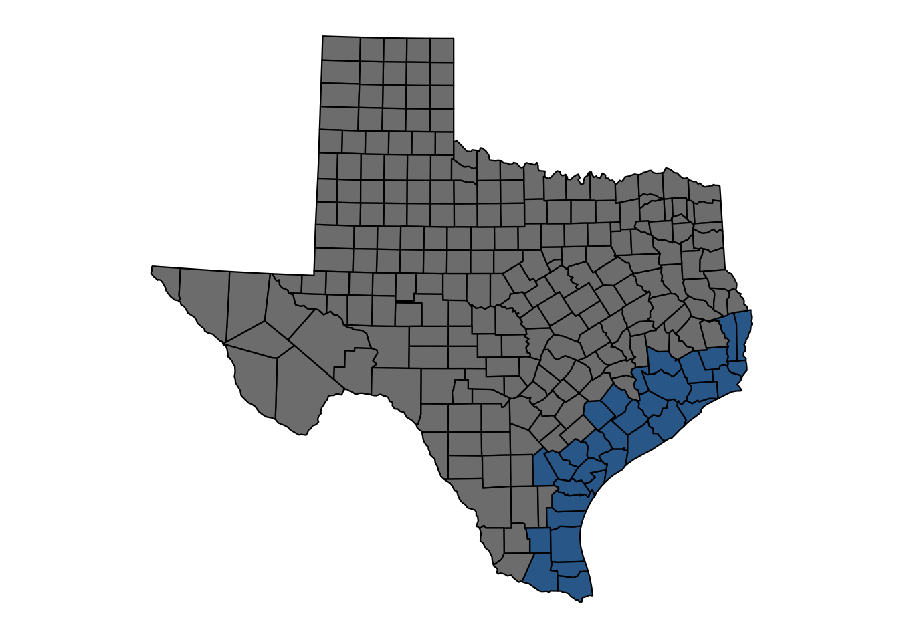

2 Atlantic hurricanes
- the beginning of the Atlantic hurricane database in 1851
2.1 Low lying counties

2.2 Counties struck by major hurricanes
- Hurricane force wind strength is rated according to the Saffir-Simpson Hurricane Wind Scale.
- Major hurricanes: category 3+